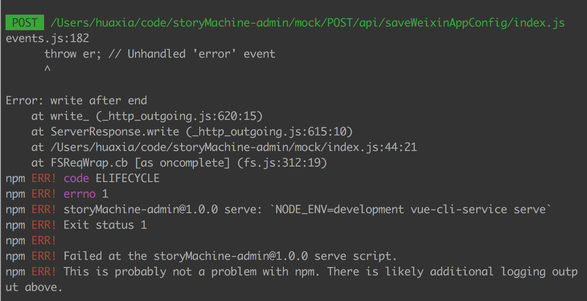
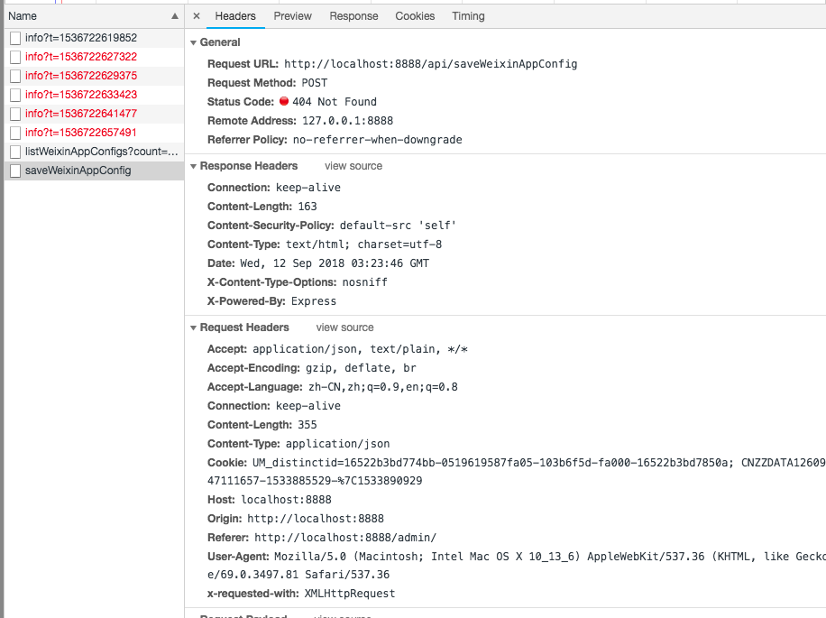
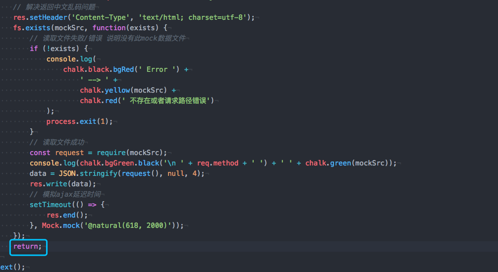
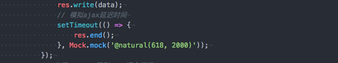

- 🎬 前情提要
😭 某天在本地开发vue项目时需要本地mock,一直使用get获取数据，未出现任何毛病，结果在做提交数据POST请求时就一直404断掉nodejs服务器
- 🐒 现象展示
   - 🏁 开始寻求解决方案
[ x ] 排查是否是本地读取文件错误
[ x ] 排查是否是axios插件错误
[ x ] 排查是否是response 直接未返回数据错误
- 😀 后来查找到原因
 是因为在 res.end 后不能再有 res.write
but！😯！并没有 res.end 后再次 res.write 啊？为什么会酱紫？😯？一脸蒙圈~~
原来是post请求会在握手🤝请求成功后再次进入next() 导致这样的原因，所以应该在其后面return掉即可解决这一问题